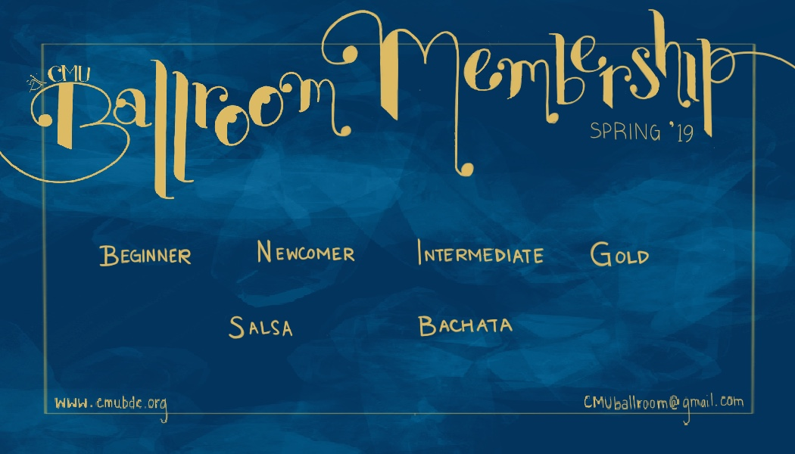
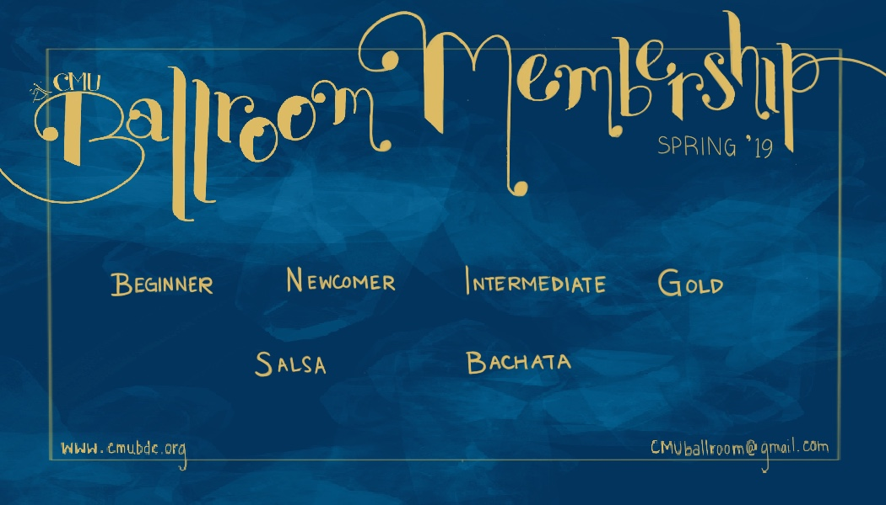
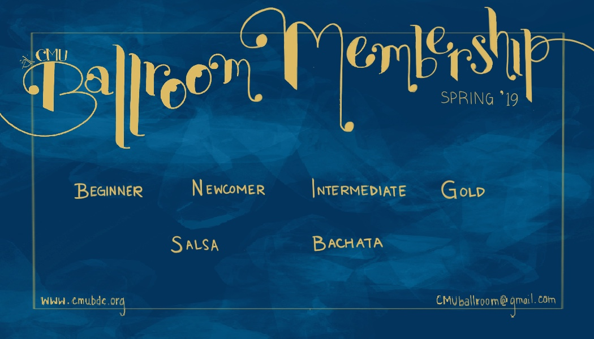

Public Relations
Graphic Designer
Photoshop, Premiere Pro
Aug 28th, 2018 - May 10th, 2019
The Public Relations Officer is in charge of creating and spreading promotional material for the Carnegie Mellon Ballroom Dance Club and maintaining its online presence on Facebook and Instagram. We advertise our lessons, socials, and competition team each semester with new material.
Ballroom Fall Rush is hosted at the beginning of the academic year, when incoming first years gain their first exposure to our club. Since our target audience was experiencing a large transition in their lives, and one that I recently went through, I wanted to capture their migration from one home to another. I created promotional material that would emphasize the bonds that we made with each other because we were in this club.
Ballroom Spring Rush is hosted the semester after Fall, and targeted mostly towards graduate students. Our target audience was a lot older, busier, and most of whome were looking for a fun outside activity. I tried to incorporate royal blues and bright coral reds to promote the elegance and festive nature of ballroom.

I created a more engaging method of viewing ballroom, especially online. We released this video in facebook posts, events, and on our YouTube channel.